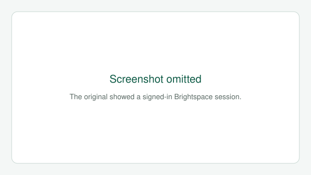

Widgets you can add to a course homepage—Institution custom tools (Office Hours Chat and Discussion Board Activity) plus D2L Brightspace package widgets for content, announcements, and student orientation.
These tools sit on your course homepage (not inside Content topics). Some are Institution custom widgets; others are D2L package widgets that ship with Brightspace.
If a widget is not already on your homepage, add it from the widget list—or ask eLearning to place it for you.
Built by Institution eLearning for course homepages. These are not standard Brightspace system widgets.
Institution custom · Instructor & students
Office Hours Chat
Run live, private office-hours chats from your course homepage. Open or close hours, admit students from a waiting room, chat with more than one student at a time, and download TXT transcripts when a session ends.
Instructor controls Student waiting room & chat
What instructors can do
Open / Close Office Hours — a shared course flag every student can see
Waiting room — see who joined while hours are open
Start Chat — admit a waiting student into a private conversation
Multiple chats — talk with more than one student at once
Download Log — save a TXT transcript; ending a chat can auto-download one
What students see
Whether office hours are open or closed
Join Waiting Room when hours are open
A private chat with you once admitted
Option to download their own chat log
Screenshots

Instructor view — hours closed. Use Open Office Hours when you are ready for students.Instructor view — hours open with an active chat. End Chat downloads the transcript automatically.Student view — private chat after being admitted, with Download My Log.
Tips
Keep the widget on the course homepage so both you and students see the same tool.
Closing office hours can end active chats and download transcripts automatically.
Use your course’s existing student-view / demo student options if you want to try the waiting-room flow yourself.
Institution custom · Everyone in the course
Discussion Board Activity
Show a homepage feed of the newest discussion posts and replies from the last 30 days. The widget loads 10 items first, then offers Load more—handy for keeping conversation activity visible without digging through every forum.
Instructors Students
What it shows
Newest posts and replies across course discussions (last 30 days)
Short text previews with links into the discussion topic
Initial list of 10 items, then load more as needed
Screenshot
Recent posts and replies appear on the course homepage with Refresh and type indicators for new posts and replies.
Tips
Place it full-width on the course homepage so the feed is easy to scan.
Students only see discussions they already have permission to view.
Pair it with your Discussions analytics pages in this dashboard when you need deeper follow-up.
Institution custom · Students (section-aware)
Section Profile Widget
On multi-section courses, show each learner the instructor profile for their section—photo,
office hours, phone, bio, and an email button—based on a JSON config in Manage Files.
Students see their section’s instructor Instructors configure via builder
Screenshot
Student view — profile card for the section they are enrolled in.
Standard Brightspace widgets from D2L. Add them from the course homepage widget list when they are enabled for your course.
D2L package · Instructor posts · Everyone reads
Activity Feed
A central homepage feed for instructors to post messages, share links to course materials or external resources, and create or highlight assignments. Students follow the feed on the course home without opening Announcements or Content first.
Instructors post Students view
What it does
Post messages and updates that appear on the course homepage
Link to course materials or external resources
Share or create assignment-related posts from the feed
Pin important posts so they stay at the top of the feed
Tips
Use Activity Feed for quick, ongoing communication; use Announcements when you need a more formal course-wide notice.
Pin syllabus links, weekly agendas, or “start here” resources so they stay visible.
D2L package · Everyone in the course
Content Browser
Browse course content from the homepage: drill into modules and topics, jump to recently visited items, and open bookmarked topics. Selecting a topic opens it in View Content. The widget remembers where someone left off when they return to the homepage.
Instructors Students
What it does
Browse modules and topics without leaving the homepage first
Show recently visited and bookmarked topics
Use breadcrumb-style navigation to move up a module level or return home in the widget
Retain the last browsing place when users return to the course homepage
Tips
Unlike Content Navigator, Content Browser focuses on browsing and bookmarks—it does not emphasize module completion percentages.
Encourage students to bookmark topics they revisit often (readings, resources, weekly checklists).
D2L package · Everyone in the course
Content Navigator Widget
Access course content from the homepage with navigational history, content-type icons, and module completion shown as a percentage. Students can jump back to the last-visited module or topic and see progress at a glance.
Instructors Students
What it does
Open course content directly from the homepage
Track and display navigational history (including last-visited items)
Show icons for content types (pages, files, activities, and so on)
Indicate module completion as a percentage
Tips
Best when your Content is organized into clear modules and completion tracking is turned on for topics students should finish.
Choose Content Navigator when you want progress visibility; choose Content Browser when you want bookmarks and free browsing.
D2L package · Everyone in the course
Visual Table of Contents Widget
Presents course modules as interactive flip tiles. The front of each tile shows the module title and image from Content; the back shows the module description. Students can open modules quickly and scan progress or completion without opening the full Content tool first.
Instructors Students
What it does
Display modules as visual flip tiles on the homepage
Pull module titles and images from Content for the tile front
Show module descriptions on the reverse side of each tile
Help students navigate to modules and see progress at a glance
Tips
Add module images and short descriptions in Content so tiles look intentional and readable.
Works especially well for courses with a small number of top-level modules (units, weeks, or themes).
D2L package · Popup on course home
Welcome Window Widget
Shows a popup orientation window over the course homepage. Content comes from a Content module whose title includes Welcome—each HTML page (or topic) in that module becomes a step students click through before they can dismiss the window. After dismissing, they can relaunch it from the homepage widget button.
Instructors set content Students see on entry
How to set it up
Confirm the Welcome Window Widget is enabled for the course (Course Admin → Tools, if needed) and added to the homepage.
In Content, create a module whose title includes the word Welcome (for example, “Welcome” or “Welcome to this course”).
Add one or more HTML pages (or other topics) to that module—each becomes a step in the popup.
Visit the course homepage to preview: the window appears until dismissed on the last step.
What students experience
The window appears when they arrive on the homepage (until they dismiss it)
It can reappear when you add or rearrange content in the Welcome module
They can open it again later with Relaunch the Welcome Window on the homepage
If there is no Welcome module (or no content in it), the popup does not appear
Setup tip: Use the Welcome module for a short orientation—meet the instructor, syllabus highlights, how to navigate, or first-week priorities. Keep steps brief so students can finish and dismiss quickly.
How to add a widget to your course homepage
Open the course in Brightspace and go to the course homepage.
Select the homepage options menu (often labeled Change Course Homepage / edit homepage) and choose to edit or customize the homepage layout.
Choose Add Widgets and look for the widget by name:
Add the widget, drag it where you want it, and save the homepage.
If you do not see a widget in the list, it may be turned off under Course Admin → Tools, or not yet available on your homepage template.
Email elearning@example.edu with the course name and which widget(s) you want added.